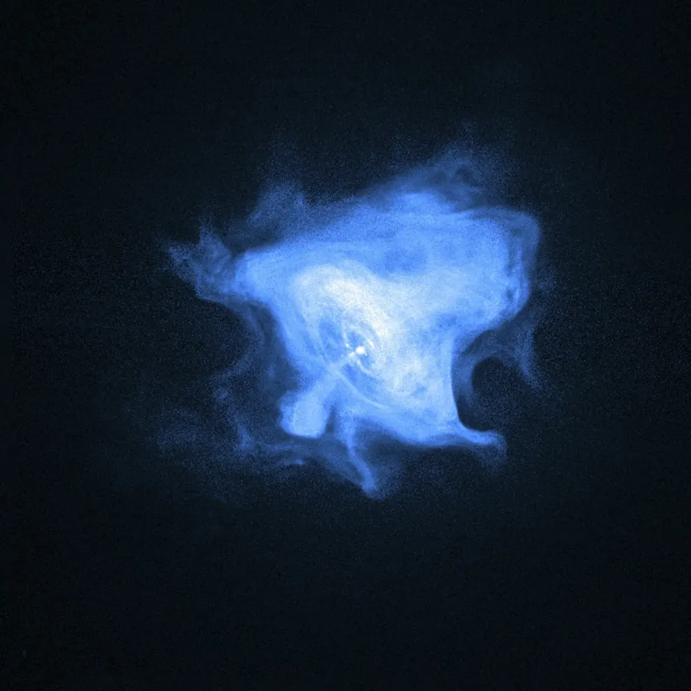
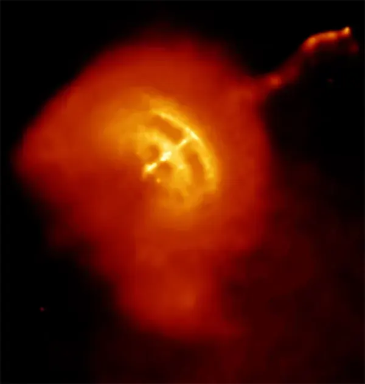

Neutron stars and pulsars
What is left when a big star explodes is stranger than science fiction.

📷 NASA/CXC/SAO/F. Seward et al. · CC BY 4.0

📷 NASA/CXC/PSU/G. Pavlov et al. · Public domain
Made of neutrons
When the iron core of a big star collapses, it is crushed so hard that electrons and protons merge into neutrons. The result is a ball of neutrons packed as tightly as the inside of an atom’s nucleus. Its gravity is so strong that a ball dropped from one metre would hit the ground at millions of kilometres per hour.
Pulsars: cosmic lighthouses
A collapsing core spins faster, like a skater pulling in her arms, and its magnetic field gets squeezed and much stronger. Beams of radio waves shoot out from its magnetic poles. If a beam sweeps past Earth we see a blink each turn. Such a neutron star is a pulsar.
The first pulsar was found in 1967 by Jocelyn Bell Burnell, a PhD student, who noticed a strange signal repeating every 1.34 seconds. It was so regular that the team half-jokingly called it LGM-1, "little green men".
| Pulsar | Turns per second | Note |
|---|---|---|
| Crab Pulsar | 30 | The core of the star that exploded in 1054. |
| Vela Pulsar | 11 | About 11,000 years old; its jet is seen in X-rays. |
| PSR J1748-2446ad | 716 | The fastest known: its surface moves at about a quarter of the speed of light. |
Magnetars and collisions
Magnetars are neutron stars with the strongest magnetic fields known, about a thousand trillion times Earth’s. When two neutron stars spiral together and collide, they shake space itself. In 2017 detectors on Earth caught these gravitational waves (GW170817), and telescopes then saw freshly made gold and platinum glowing in the blast.